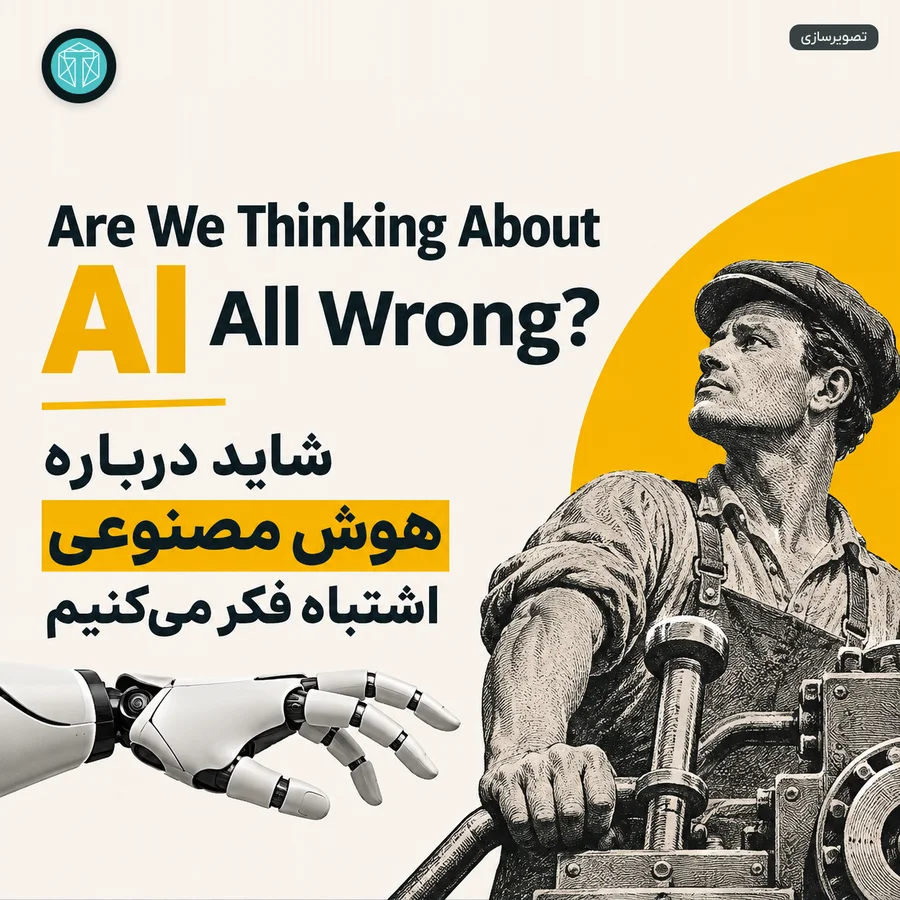

همه دربارهی هوش مصنوعی سؤال را اشتباه میپرسند
Everyone is asking the wrong AI question
مسئله «کارم را میگیرد؟» نیست؛ وظیفهها عوض میشوند. شواهد امسال و راه درست فهمیدن تغییر
The question is not “will it take my job?”; tasks are changing. This year’s evidence and how to read the change
دو سال است یک سؤال همهجا تکرار میشود: «هوش مصنوعی کار ما را میگیرد؟» دادههای امسال نشان میدهد سؤال را اشتباه میپرسیم. اخراج گستردهای رخ نداده، ولی چیز دیگری دارد عوض میشود: وظیفههای داخل شغلها و راه ورود تازهکارها. این گزارش میگوید شواهد چیست، چرا «کار را میگیرد» قاب غلطی است و چطور تغییر را درست بفهمیم.
در یک نگاه
- ترس و واقعیت: در پیمایشهای McKinsey، ۳۲٪ پیشبینی کرده بودند هوش مصنوعی نیرو کم میکند؛ ۱۴٪ کاهش واقعی گزارش دادند
- اخراج: طبق دادههای رسمی آمریکا، اخراجها هنوز حدود ۱٪ نیروی کار است و گلدمنساکس انتظار دارد بازار کار یک سال دیگر «کماستخدام، کماخراج» بماند
- جایی که واقعاً حس میشود: استخدام تازهکارها و فارغالتحصیلان
- قاب درست: شغل مجموعهای از وظیفههاست و هوش مصنوعی اول وظیفهها را عوض میکند
1. ترس بزرگ، واقعیت کوچکتر
سالهاست پیشبینیهای بزرگی میشنویم. مثلاً مدیرعامل شرکت Anthropic در ۲۰۲۵ گفت هوش مصنوعی ممکن است در یک تا پنج سال نیمی از شغلهای یقهسفیدِ سطح ورودی را حذف کند.
دادهها تاکنون چه میگویند؟
- طبق نمودار McKinsey، ۳۲٪ پاسخدهندگان در یک پیمایش انتظار کاهش نیرو داشتند، اما در پیمایش بعدی فقط ۱۴٪ کاهش واقعی را گزارش دادند. حدود دو سوم گفتند تغییر کلی اشتغالشان کم یا صفر بوده.
- بریف دانشگاه استنفورد (SIEPR) میگوید بیکاری از ۲۰۲۲ در گروه شغلهای بیشتریندرمعرض هوش مصنوعی ۰٫۷۷ واحد درصد بالا رفته و در کمتریندرمعرض ۰٫۸۵ واحد؛ یعنی تفاوتی دیده نمیشود. در دادهی سرشماری آمریکا فقط حدود ۵٪ شرکتها از اثر بر اشتغال خبر دادهاند و افزایش و کاهشها تقریباً برابر است.
- طبق فورچون، اخراجها در سپتامبر حدود ۱٪ نیروی کار بوده و گلدمنساکس انتظار دارد «کماستخدام، کماخراج» یک سال دیگر ادامه یابد.
- نیویورکتایمز مینویسد اخراجها حتی در مشاغل یقهسفید پایین مانده است.
چرا هنوز نیامده؟ هاروارد چند دلیل ساده میآورد: طبق جوزف فولر (دانشکدهی کسبوکار هاروارد) فقط حدود یکسوم آزمایشهای هوش مصنوعی در شرکتها موفق است، بیشتر شرکتها کارمندانشان را آموزش نمیدهند و رافائلا سادون (همان دانشکده) حذف نیروی انسانی را «تلهای بسیار بد» برای مدیران میداند.
2. قاب غلط: «شغل را میگیرد»
شغل یک بستهی وظیفه است، نه یک کار واحد. هوش مصنوعی معمولاً بخشی از وظیفهها را میگیرد، نه کل بسته را.
مثال رادیولوژی:
مجلهی MIT Technology Review یادآوری میکند که چند سال پیش گفته میشد آموزش رادیولوژیستها را باید متوقف کرد. امروز هوش مصنوعی تصویرها را غربال میکند، اما تعداد رادیولوژیستها از همیشه بیشتر است، چون تفسیر نتیجه و ارتباط با بیمار هنوز کار انسان است. گزارش ۲۰۱۶ دولت آمریکا هم پیشبینی کرده بود خودروهای خودران ۲٫۲ تا ۳٫۱ میلیون شغل را حذف کنند؛ این اتفاق نیفتاد.
عدد مهم:
مدل فولر میگوید حدود ۴۱٪ از وظیفههای کاری میتوانند با هوش مصنوعی خودکار یا تقویت شوند. «تقویت شوند» با «حذف شوند» فرق دارد.
تجربهی مستقیم:
در یک پژوهش مرکز تماس، دستیار هوش مصنوعی بهرهوری را حدود ۱۵٪ بالا برد؛ برای کارمندان تازهکار حدود ۳۰٪ و برای برترینها تقریباً صفر (SIEPR). یعنی ابزار، اول از همه شکاف مهارت را کم میکند.
3. چیزی که واقعاً عوض شده
استخدام تازهکارها:
بیکاری فارغالتحصیلان تازه در اوایل ۲۰۲۶ به ۵٫۶٪ رسیده، ۱٫۶ واحد بیشتر از سه سال پیش. پژوهش دانشگاه استنفورد (به نقل از فورچون) میگوید اشتغال ۲۲ تا ۲۵ سالهها در شغلهای بیشتریندرمعرض حدود ۱۹٪ زیر سطح انتظار است و مهمتر اینکه این بهخاطر استخدام کمتر است، نه اخراج بیشتر.
ولی علت را قطعی نکنیم:
نویسندگان SIEPR هم میگویند بخشی از این روند با افزایش نرخ بهره از ۲۰۲۲ و کار از راه دور همزمان بوده و جدا کردن اثر هوش مصنوعی هنوز «سؤال پژوهشی باز» است.
شرکتها چه میکنند؟
طبق گزارش بانک فدرال نیویورک به نقل از TechRadar، حدود ۴٪ شرکتهای خدماتیِ استفادهکننده از هوش مصنوعی در شش ماه گذشته به این دلیل نیرو کم کردهاند، ولی حدود ۱۳٪ نیرو بیشتر استخدام کردهاند، اغلب برای راهاندازی خود فناوری. در عین حال، سهم شرکتهایی که «بهخاطر هوش مصنوعی کمتر استخدام میکنند» از ۱۲٪ به ۱۵٪ رسیده. یعنی تصویر مخلوط است.
4. آینده قطعی نیست
عدم قطعیت را نباید پنهان کرد:
- دوگ المندورف (دانشکدهی کندی هاروارد) میگوید شواهد امروز «قدرت پیشبینی بسیار کمی» برای ۵ تا ۱۵ سال بعد دارد و انتظار دارد در دهههای آینده شغلهای زیادی از بین برود، هرچند بیشتر آدمها کار تازه مییابند.
- گلدمنساکس برآورد میکند تا حدود ۹٪ نیروی کار در دوران گذار ممکن است جابهجا شوند و اثر در رکودها تندتر است.
- مدل NBER سناریویی با حدود ۳ میلیون بیکار همزمان، یعنی ۲٪ نیروی کار آمریکا، بررسی میکند.
پس نتیجه این نیست که «خیالتان راحت باشد». نتیجه این است که سرعت تغییر سؤال اصلی است و فرصت آمادگی هنوز هست.
5. چطور تغییر را درست بفهمیم؟
۱. وظیفههایت را فهرست کن، نه عنوان شغلت را.
بنویس در هفته چه کارهایی میکنی. کدام تکراری و قابلواگذاری به ابزار است؟ کدام قضاوت، ارتباط و مسئولیت میخواهد؟ وقت آزادشده را سمت دومی ببر. مهارتهای انسانی مثل ارتباط، قضاوت و حل مسئله را هم تقویت کن.
۲. شکاف آموزش را خودت پر کن.
فولر میگوید بیشتر شرکتها کارمندان را آموزش نمیدهند و کارمندان فقط مثل موتور جستوجو از هوش مصنوعی استفاده میکنند. ابزارها در دسترساند؛ آنچه فرق میسازد این است که بلد باشی در کارت درست از آنها استفاده کنی.
۳. برای تازهکارها: عمق و گستره بساز.
اگر مسیر ورود باریکتر شده، پروژهی واقعی، نمونهکار و مهارتهای همجوار (فروش، محصول، ارتباط با مشتری) ارزش بیشتری پیدا میکنند. طبق هاروارد، شرکتها هم میدانند بدون جونیور، سینیورِ فردا ساخته نمیشود.
۴. تیتر را با داده بسنج.
«کشتار شغلی» و «همه چیز آرام است» هر دو تیتر هستند. ببین چه کسی، با چه دادهای و برای چه بازهای میگوید.
۵. برای کسبوکار: اول آموزش، بعد ابزار.
طبق فولر، یکی از دلایل شکست آزمایشهای هوش مصنوعی، نبودن دادهی خوب و آموزش کارکنان است. آموزش آدمها بخشی از پروژه است، نه کار جانبی.
تحلیل دیتومان
سؤال «کار را میگیرد؟» ترس میسازد و کمی کمک میکند. سؤال بهتر این است: «کدام وظیفههای من عوض میشود و من چه چیزی را یاد بگیرم؟»
دادههای امسال میگویند هنوز جا برای یادگیری هست؛ اخراج گستردهای نیست، ولی راه ورود تازهکارها سختتر شده و آیندهی دورتر نامعلوم است. دیتومان این را با هم دنبال میکند: خبر درست، تعبیر درست و مهارتی که همین امروز میشود شروعش کرد.
این گزارش آموزشی است و توصیهی شغلی یا سرمایهگذاری نیست. عددهای فورچون و TechRadar از منابع ثانویه آمدهاند و مستقیم با اصل گزارشها تطبیق داده نشدهاند.
بیشتر بخوانید
منابع
- McKinsey: AI job losses fall short of forecasts
- Stanford SIEPR policy brief: What is really happening to jobs? Separating AI hype from reality (July 2026)
- Fortune: Why there is no AI layoff wave (16 Nov 2026)
- New York Times via The Star: AI was supposed to come for our jobs, so far evidence is mixed (10 Nov 2026)
- Harvard Gazette: Why AI hasn't triggered mass layoffs yet (29 Sep 2026)
- MIT Technology Review: A reality check on the AI jobs hysteria (26 May 2026)
- TechRadar on a New York Fed analysis (2 Sep 2026)
آخرین بازبینی: ۴ آذر ۱۴۰۵. پژوهشها را از صفحهی منبع بررسی کردیم؛ عددهای فورچون و TechRadar از منابع ثانویهاند و با اصل گزارشها تطبیق داده نشدهاند. این گزارش آموزشی است و توصیهی شغلی یا سرمایهگذاری نیست.